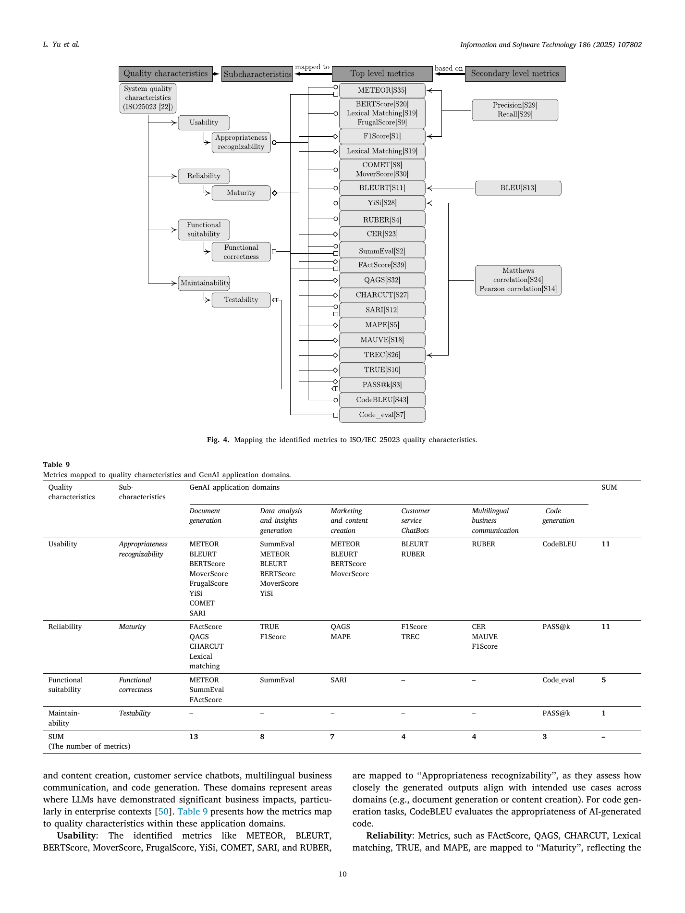
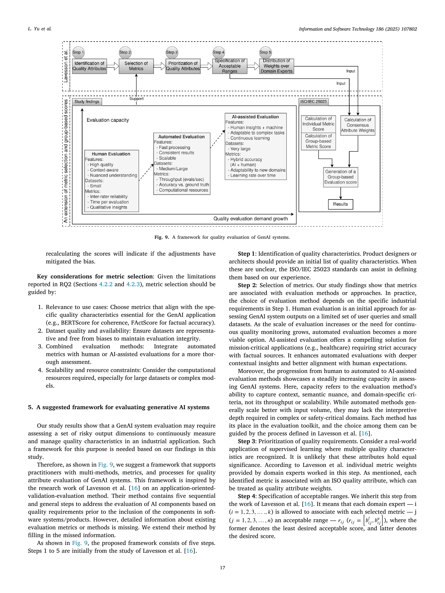
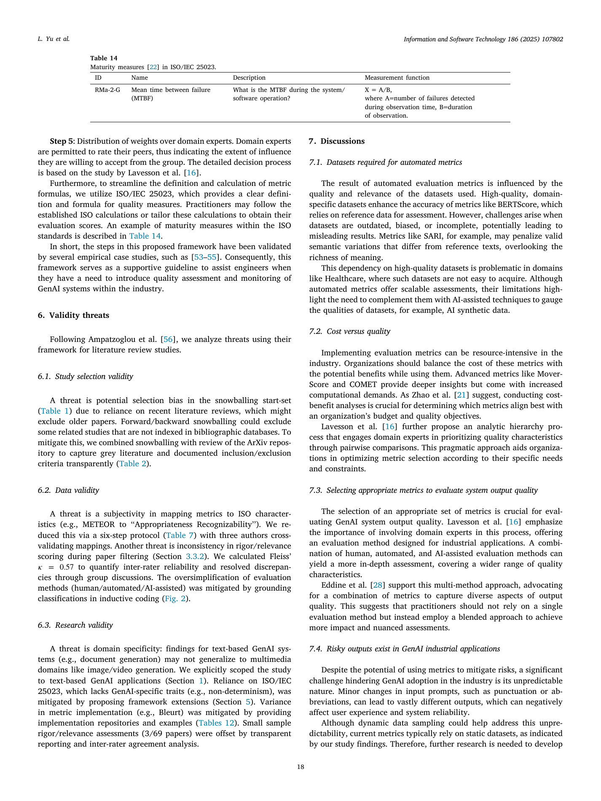

本篇目录
1. 研究对象、企业背景与真正的问题2. 问题—证据—解释矩阵3. 43项研究怎样得到：方法、操作与筛选疑点4. 28项指标与4项质量特性：必须理解的具体内容5. 三类评价如何操作：不是三种天然有高低的工具6. 六类风险与三步流程：原文提出了什么，尚未证明什么7. 五步框架、方案对应与实际实施程度8. 原因证据、创新、不足与必须警惕的异常9. 关键英文原句、准确译文与术语辨析10. 对S公司可以怎么用：先落实要求，再验证指标阅读范围与证据状态生成式AI系统质量如何测量：指标、质量特性与评价流程的连接
原文：Measuring the quality of generative AI systems: Mapping metrics to quality characteristics — Snowballing literature review。以用户提供的21页正式PDF为阅读对象，阅读日期2026-10-31。下文链接使用PDF物理页；第2–21页的纸面页码与物理页一致。研究结论、作者建议、说明性示例与本报告审查意见分别标明。
1. 研究对象、企业背景与真正的问题
Liang Yu, Emil Alégroth, Panagiota Chatzipetrou, Tony Gorschek. Information and Software Technology, 186 (2025), 107802. DOI：10.1016/j.infsof.2025.107802。 首页注明2025年5月28日接收、6月18日在线发表。作者来自Blekinge Institute of Technology、Ericsson AB、Örebro University和Fortiss；作者具有企业单位署名，不表示本文就是爱立信的企业案例。PDF第1页
本文是滚雪球式文献综述，研究的是将大语言模型接入软件后，如何评价该系统生成的文本或代码输出。它没有自行招募企业、运营人员或用户开展现场试验。最终43个研究样本是43项文献，不是43家企业，也不是43次成功的管理改进。虽然使用GenAI这个广义名称，正文明确将范围限定为基于LLM的系统，排除图像、视频等多媒体输出。PDF第2页 PDF第4页
应用背景覆盖文档生成、数据分析与洞察、营销内容、客服、多语种商业沟通、代码生成六类。核心问题不是“缺少所有评价指标”，而是已有指标分散在不同任务中，使用者难以说清某个分数究竟代表哪项质量要求，依靠什么数据计算，适合什么评价流程。作者据此提出三个实际研究问题：找出指标及其质量特性映射；归纳评价方法；归纳风险输出评价过程。第3页引导句写“four research questions”，后面实际只列RQ1–RQ3，是文本不一致，不能据此补造第四个问题。PDF第3页
2. 问题—证据—解释矩阵
| 问题 | 原文证据与处理 | 可以支持什么；不能支持什么 |
|---|---|---|
| 有指标，但质量含义不清 | 表8汇集28项指标，图4与表9连接到4项质量特性和6类应用 | 提供选择入口；不证明这些映射已经由ISO认证或经企业测量验证 |
| 一种方法难覆盖全部判断 | §4.2归纳人工、自动、AI辅助三类，并分别说明流程、数据与局限 | 支持按任务搭配方法；没有测出三种方法各自节省多少人工或谁必然最好 |
| 只测相似度可能漏掉事实与业务问题 | CER偏重字符；参考文本不足或多解时，自动指标可能误罚合理表达 | 支持检查测量对象与业务要求是否一致；不是某企业已经发生的缺陷率 |
| 风险需要持续追踪 | 表13列6类风险，图8提出准备数据、计算分数、监测分数三步 | 是风险识别与流程建议；未给风险发生率、误报率或改进前后结果 |
| 指标选择依赖领域判断和资源 | 图9扩展既有五步框架，讨论专家、可接受区间、权重和费用 | 可作为评价设计指南；不应照搬为S公司必须采用的加权模型 |
相关证据见PDF第9页、PDF第10页、PDF第12页、PDF第16页、PDF第17页。这些问题是文献中的测量与评价困难，不是本文识别出来的企业组织管理根因。
3. 43项研究怎样得到：方法、操作与筛选疑点
3.1 检索与滚雪球的实际数量
作者先从近期综述入手，用“大语言模型/LLM＋metric＋systematic literature review/survey＋experience/empirical/industry”等条件，在ArXiv、Scopus、ACM Digital Library、IEEE Xplore中检索。四个来源分别报告7、4、2、1篇，共14篇；根据题名、关键词和摘要选出12篇起始综述。表1的引文次数采集日期是2024年4月27日，不能把该日期直接解释为全部滚雪球检索的统一截止日。PDF第4页
接着向后查参考文献、向前查引用它们的研究，迭代至不再发现新论文；有DOI的候选通过脚本抓取，无DOI的人工处理，共形成1,583项候选。按纳排标准保留69项，再经严谨性和工业相关性筛选，作者报告最终43项，附录以S1–S43编号。纳入范围包括2014–2024年英文实证研究等，排除纯理论无实证资料、无指标、无明确结果及多媒体研究；含灰色文献，不能统称“43篇高水平期刊论文”。PDF第4页 PDF第5页 PDF第19页
选择滚雪球法的理由是该领域变化快，近期综述可提供入口，前后追踪可补充旧研究和新研究。代价是起始文献及其引用网络决定覆盖范围；作者承认没有将本研究与同题目的完整数据库系统检索作实证比较，因此不能声称穷尽所有相关指标。PDF第19页
3.2 严谨性与工业相关性怎样打分
严谨性对研究背景、设计、效度讨论分别给0、0.5或1分，总分0–3；工业相关性对研究对象、情境、规模、研究方法各给0或1分，总分0–4。作者以此尝试过滤仅在玩具任务或纯实验室环境中展示的指标。三名作者先独立评3/69项论文，报告Fleiss’ κ=0.57、p<0.05，讨论一致后，由第一作者完成全部文献的筛选。不能把这段写成“43篇全部经三位评审独立筛选且高度一致”；原文所谓约5%的校准实际是3/69，样本很小。PDF第5页 PDF第6页
筛选记录有重要内部矛盾，已核对PDF图像：第6页步骤12称仅纳入严谨性3分、相关性4分的论文；但同页表5把PASS@k对应研究列为YES，表6却给其3/0分；另一项列为YES的研究分数为2/3，也未达门槛。表5标为排除的deltaBLEU文献S13，又出现在第19页最终43项清单。这些不一致意味着“43项均严格满足最高工业相关性标准”尚不能从公开文本成立；须取得完整评分表或作者解释才能消除疑问。本文只报告作者给出的43，不自行重新计算一个未经复核的正确纳入数。
3.3 怎样从文献形成指标、方法和流程
作者用预设编码抽取指标名称、定义、数据、实现和质量特性，用归纳编码整理风险。四层编码数分别为4、25、121、31；这是编码节点数，不是新增样本或经过验证的管理问题数量。通过熟悉材料、修订编码、聚合主题和交叉讨论完成综合。PDF第6页 PDF第7页
指标映射六步为：读定义；查测量内容和公式；比较质量子特性定义；连接上位质量特性；排除无使用案例或证据支持的映射；最终确认。方法分类由评价过程描述归纳，风险三步则由不同文献中分散的做法综合，而不是从一个成功运行的企业流程中直接复制。PDF第8页
4. 28项指标与4项质量特性：必须理解的具体内容
表8的28个名称可以按下列阅读分组理解。分组仅为解释方便，不替代作者原表，也不表示指标互相独立。
| 阅读分组 | 原表指标名称 | 主要要看什么 |
|---|---|---|
| 表面匹配、简化与字符变化 | BLEU、METEOR、Lexical Matching、CER、CHARCUT、SARI | 与参考表达相似到何种程度；不能仅凭相似确认事实或经营判断正确 |
| 表征、语义或文本分布比较 | BERTScore、BLEURT、YiSi、COMET、MoverScore、FrugalScore、RUBER、MAUVE | 利用语义表征等减少只按字面匹配的不足，仍依赖特定数据与模型 |
| 摘要与事实评价 | SummEval、TRUE、FActScore、QAGS | 摘要质量、内容与来源的一致性或事实支撑 |
| 分类、数值和关联 | F1Score、Precision、Recall、Matthews correlation、Pearson correlation、MAPE | 预测、标签、数值误差或关联；它们本身不能替代业务质量定义 |
| 检索评测资源 | TREC | 原表以TREC为指标名；其支持文献实际是TrecTools工具库，使用前需进一步确定具体评分量 |
| 代码生成 | Code_eval、PASS@k、CodeBLEU | 测试通过或代码结构相似；通过有限测试不等于覆盖全部质量 |
原表报告BLEU由12项研究支持、METEOR由8项支持、F1Score与BERTScore各5项；这些是文献出现数，不是准确率或推荐权重。表8的Precision和Recall重复列出S29却各计3篇，按所列编号实际只有2个不同来源，因此出现频次也应谨慎引用。PDF第9页
| 质量特性及子特性 | 作者给出的代表指标与解释 | 本报告的适用边界 |
|---|---|---|
| 易用性Usability—适合性可识别性Appropriateness recognizability | METEOR、BERTScore、BLEURT等，表示输出是否契合预期用途 | 文本相似是代理信息，不直接等于用户能否识别整个系统适合其需求 |
| 可靠性Reliability—成熟性Maturity | FActScore、QAGS、TRUE、F1Score、PASS@k等，表示正常条件下输出正确 | 单次事实正确率、k次中至少一次通过与持续可靠服务是不同概念 |
| 功能适合性Functional suitability—功能正确性Functional correctness | METEOR、SummEval、FActScore、SARI、Code_eval | 应先定义任务要求与验证对象；不是所有相似度指标都天然能测业务正确性 |
| 可维护性Maintainability—可测试性Testability | PASS@k，作者将其解释为代码结果验证与测试能力的线索 | 通过概率不直接测测试设计难度、测试工作量或系统维护成本 |
这些是作者的解释性映射，不是ISO标准直接规定“METEOR测易用性”或“PASS@k测可维护性”。作者明确把原来针对系统或组件的部分定义转向生成输出。四类也不是完整的GenAI质量模型；性能效率、安全性等未被本次映射覆盖，不能因此声称这些质量要求不重要或整个研究领域没有相关指标。
表9各质量行列出的不同指标数为11、11、5、1；同一指标可跨行，不能将合计28理解成四组互斥的28项指标。六个应用领域分别列13、8、7、4、4、3个指标，也存在跨领域重叠。这些数字是映射覆盖，不是应用成熟度或经过实测的企业数量。
METEOR的完整示例：相似度如何被解释成质量
作者比较“The cat sat on the mat”与“A cat sat on the rug”，说明METEOR考虑词匹配、同义词及词序惩罚，因mat/rug的语义接近而比纯字面匹配更能识别近义表达。原文展示公式，但没有给此句的计算得分，也未测试人类是否因此更准确识别系统用途。作者据此映射到适合性可识别性；同时因缺少直接证据，排除了映射到可靠性成熟性的想法。值得借鉴的是“排除缺证映射”这一步，不能只保留映射结果而省略证据检验。PDF第6页 PDF第7页 PDF第8页
5. 三类评价如何操作：不是三种天然有高低的工具
人工评价：专家作最终判断
流程是输入工业情境和任务要求，经提示生成结果，再由领域专家检查、反馈，汇总评分或评审一致程度。原文举例：代码能编译，不代表符合企业编码规范或能与现有代码整合，这些仍需专业判断。表10列SARI、PASS@k、SummEval为支持性指标，意思是指标给专家线索，最终判断仍由人作出。PDF第11页 PDF第12页
作者另用SARI达到0.8后筛选材料、减轻评审负担作说明，但没有给出该阈值的校准样本、误判情况或工时实验，也没有证明这就是适用于所有任务的“语义合格线”。若只让专家看高分输出，低分但实际合理的结果也可能被漏掉；企业采用前需验证筛选的假阴性与假阳性。
自动评价：规则或脚本计算，人员解释结果
流程为确定情境要求→选择测试提示→生成结果→用参考数据及脚本计算→分析→反馈调整。表11说明各指标所需的参考文本、标签、数值、代码测试等，以及数据和实现入口。例如CER关注字符错误，可能漏掉上下文或推理问题；代码测试要有足够测试用例；参考文本缺失、陈旧或偏颇会扭曲评分；多种合理表达也可能被错误惩罚。自动计算可重复，不等于它测量的概念已经正确。PDF第12页 PDF第13页
正文称21项自动指标，表11实际有21个展示行，其中一行合并F1Score、Precision、Recall；不能把这个行数直接与表8的28个名称逐一相减。代码、数据链接提供实施起点，本报告未运行它们，也未核验其当前版本。
AI辅助评价：模型评分与专家校准结合
图7先生成待评结果，再让评价模型依据标准形成判断、评分，由领域专家审查评分并修订标准，形成结果和对齐报告。表12列BLEURT、MAUVE、MoverScore、TRUE、COMET五项，包括学习型表征指标和模型评分资源，不是五项都等同于让聊天模型直接打分。作者也承认三类方法存在连续谱，自动方法同样隐含人类设计的数据与阈值，不能当作严格互斥分类。PDF第14页 PDF第15页
表12的实质演示包括：BLEURT比较两种“猫在垫上”的表达；MoverScore比较关于狗咬人的近义句；COMET使用源句、译文和参考译文；TRUE展示命令行调用；MAUVE以100个人类文本和100个机器文本为例，代码注释显示0.9917。它们都是实现片段或示例，0.9917不是本文企业系统的实测质量，更不是99.17%的安全率。论文没有统一复现五种方法的准确性与费用实验。
6. 六类风险与三步流程：原文提出了什么，尚未证明什么
| 表13风险类别 | 作者举出的指标 | 必须保留的限制 |
|---|---|---|
| 有害内容 | MAUVE | 表8只介绍其文本接近程度，表13却称可测毒性；本文没有验证两者之间的测量效度 |
| 偏见与歧视 | BERTScore、BLEURT、COMET | 需要有效的群体、任务与参考设计，单一语义相似分数不能自行证明不存在偏见 |
| 错误信息 | FActScore、QAGS、TRUE | 需要可信来源与可核对事实；来源本身错误仍会影响判断 |
| 不一致 | F1Score、Precision、Recall | 需要先定义比较单元、正确标签及同一输入条件；不是直接比较文字是否一致 |
| 隐私泄漏 | Lexical Matching、TRUE | 作者提出对抗测试和实体识别，但未提供本文检出率或漏报率 |
| 版权侵害 | BLEU、METEOR、BERTScore、MoverScore | 相似性只能提供排查线索，不能单独作版权侵权结论 |
以上是作者的候选对应关系，不是六项已确认的企业风险。PDF第16页
图8的三步为：准备数据→计算分数→监测分数。准备数据要覆盖目标应用的情境，并可由通用样本扩展到企业数据；计算时分别获得单独模型的基线与嵌入企业情境后的应用结果；将结果保留为历史，持续观察变化。监测在图中标为Optional，作者同时强调长期质量保证需要周期性复查。这一结构区分模型与应用系统，却不是已经做完的企业改进前后比较。PDF第15页 PDF第16页
最完整的说明性风险案例是职业性别偏见：构造程序员、运动员、医生与护士等情境，用模型生成输出，与无偏参考文本比较；若总把医生代指为he、护士代指为she，可能存在性别刻板联想；再调整数据或提示并重算。原文没有列出样本数量、真实输出频率、BERTScore变化、检测阈值或改进结果，因此这是方法演示，不能写成“研究发现模型存在某比例偏见并成功消除”。PDF第16页 PDF第17页
7. 五步框架、方案对应与实际实施程度
框架取自Lavesson等2014年的学习组件评价方法，本文补充指标、评价方法、数据与流程信息。五步必须按原文理解，不能改写成一般“需求—测试—反馈”的五环节：PDF第17页 PDF第18页
| 步骤 | 原文实际操作 | 解决的评价难题 |
|---|---|---|
| 1 识别质量特性 | 产品设计者或架构师提出系统需要满足的质量；不清楚时参考ISO框架 | 先明确测什么，避免先选一个流行分数 |
| 2 选择指标 | 按情境和需求选择指标及人工、自动或AI辅助方法 | 把抽象质量转成可操作评价 |
| 3 排定质量要求优先级 | 领域专家决定不同质量要求或指标的重要程度 | 处理不同质量目标不等重要的问题 |
| 4 设定可接受区间 | 专家对指标给出最低可接受值与期望值 | 区分“分数变化”与“是否满足要求” |
| 5 分配专家权重 | 专家评价彼此的影响程度，形成群体评价权重 | 处理多人判断如何组合；并非“继续监测” |
图9进一步连接指标分数、专家共识权重与群体总评价；人工部分列评审一致性、单次评价时间，自动部分列吞吐、对照正确率与计算资源，AI辅助部分列人机一致性、领域适应等。这些是框架中的候选评价内容，不是本文实测的结果曲线。图中“评价能力”从人工向AI辅助递增，是作者概念安排；正文解释其意指语境与领域理解，未通过比较试验证明普遍递增。
本文实际完成了文献筛选、编码、28项清单、质量映射、三类方法与两个过程框架的综合，未实施整个框架的企业试点，也没有新增系统输出数据或前后效果。第18页虽称步骤已在若干实证案例中验证，所引[53]是机器学习算法推荐的多准则决策，[54]是分类器选择的元学习综述与实证，[55]是AutoML分类综述。这些引用不能直接证明本文扩展后的GenAI五步框架整体已在企业验证。本次仅核对其书目身份与本文使用方式，未逐篇精读这三项来源。PDF第21页
8. 原因证据、创新、不足与必须警惕的异常
作者认为评价困难来自输出非确定性、幻觉、参考数据不足、多解表达、领域语境和资源约束。这些解释由文献归纳支持，没有通过本文的企业过程追踪证明某项组织安排导致某类错误。所提方案分别以质量映射缓解指标含义不清，以多种评价互补缓解单一方法局限，以数据—评分—监测应对持续变化，以专家优先级和阈值处理取舍；每条方案到效果之间仍需要应用验证。
论文的精华是让实践者在选指标前回答“它测的是什么、为什么足以代表目标质量、数据从哪里来、谁解释结果”。贡献主要是综合与组织知识，不是发明28个新指标或证明一种新管理措施有效。其价值可以保留，但不能省略下列限制。
- 覆盖和筛选可复核性不足。12篇起始综述及其引用网络可能漏文献；只以3项校准评审，随后由第一作者筛选；最高分门槛与表5、表6及最终清单冲突。κ=0.57不能被写成完整样本筛选完全可靠。PDF第6页
- 映射依赖解释，未验证全部测量效度。METEOR的可识别性、PASS@k的可测试性和MAUVE的有害内容映射尤其需回到指标原始研究与业务数据验证。表格中的候选关联不能代替证据。PDF第7页 PDF第11页 PDF第16页
- 指标、基准和工具的层次存在混用。例如TREC对应TrecTools库，SummEval和TRUE也涉及综合评测资源，采用时必须落到明确的算法、计算单元、参考数据和阈值，不能只抄一个名称。PDF第9页 PDF第19页
- 引用与统计存在局部错误。表5的S39题名是摘要事实一致性研究，附录S39却是Min等的FActScore；附录AgentCoder年份写2020，参考文献[31]写2023；Precision/Recall支持文献重复。这些足以要求二次核源，但不能擅自判定全部结论错误。PDF第6页 PDF第9页 PDF第19页 PDF第20页
- MTBF示例公式不能照抄。表14把“平均故障间隔”写为X=A/B，A是故障次数，B是观察时间；按其文字定义，量纲是“次/时间”，属于故障率方向，而非“时间/次”的平均间隔。本报告核实了原图，不是文本抽取颠倒；这不能作为正确ISO公式引用，正式采用须另查标准原文。PDF第18页
- 无直接效果测量。没有统一对比方法准确性、误报漏报、部署复杂度、运行费用或人工投入；没有新企业样本；本文结论明确限定为定性综合。PDF第19页 PDF第20页
9. 关键英文原句、准确译文与术语辨析
“our interpretation centers on GenAI system outputs, considering the inherent black-box nature of GenAI models.”
译：考虑到生成式AI模型固有的黑箱性质，我们的解释以生成式AI系统的输出为中心。这句话明确映射含有作者重新解释，并非原标准逐条规定。PDF第7页
“our conclusions are derived from qualitative synthesis rather than quantitative measurements.”
译：我们的结论来自定性综合，而不是定量测量。43与28是综述过程及产物数量，不代表进行了43次系统试验。PDF第19页
“the methods’ robustness and deployment complexity emerged from qualitative interpretations of the literature and were not measured directly.”
译：关于这些方法稳健性与部署复杂度的判断，来自对文献的定性解释，并未直接测量。不能把图示的能力增长或部署难度当作已验证的排序。PDF第20页
metric是具体可计算或量化的“度量指标”，quality characteristic是较上位的“质量特性”，两者之间需要论证；appropriateness recognizability宜理解为“适合性可识别性”，不能直接等同S公司建议是否适合经营条件的“适用性”；factual consistency强调与给定来源一致，来源并非天然正确；risky output在本篇含错误、偏见、隐私等多类风险，不是专指恶意攻击。PASS@k强调k次候选中至少一次通过，不能与τ-bench的pass^k“全部k次成功”混写，也不能把它直接译成质量稳定性。
10. 对S公司可以怎么用：先落实要求，再验证指标
S公司的当前对象是持续SP广告调整任务中各轮智能体生成建议的质量，人工修改另记，已有检查不能预设为缺失。最合适的借鉴是把质量要求、可观察证据、评价方法和可接受标准连起来，并保留指标适用边界；不需要先把本篇28项指标全部移植过来。
| S公司需要判断的内容 | 可借鉴的做法 | 不宜直接采用的替代 |
|---|---|---|
| 完整性：该轮已明确应处理事项是否回应 | 用任务对象及要求清单逐项对应建议，有依据的暂缓单列；检查覆盖与漏项 | 用BLEU、BERTScore等与一份参考文案相似来代替完整性 |
| 正确性：数据、计算、对象、事实是否有误 | 对照当时原始数据与明确约束，适宜部分自动核验，争议回查 | 把模型评分或与参考文本一致直接当作事实正确 |
| 适用性：是否符合当时经营条件 | 运营人员依据明确约束和专业理由判断，记录分歧 | 直接套用ISO“适合性可识别性”的名称，或要求只有一个最佳调整方案 |
| 人工投入与持续质量 | 分开记录检查、纠正、正常判断及新增要求工时；新增检查同样计入总投入，观察同类偏差再现 | 将计算资源、评审吞吐或消息间隔当作运营人员主动工时 |
实施时可先用正常、有偏差和合理不调整的任务试用少量判据，检验评审是否一致、是否漏掉重要问题，再决定哪些条目自动化。用于改指引或调评价标准的任务与后续效果验证应区分；标准、样本和模型版本改变时保留版本，以免“评分提高”只是评价尺子改变。同一任务多次生成保留链路而不重复计独立样本，后加的要求也不倒判前版错误。
五步框架中的专家权重、群体总分和AHP只是可选思路；当前更应把完整性、正确性、适用性分别测清楚。先确定真实偏差及其原因，再调整业务指引、现有检查或反馈安排。本文能够支持“评价要与要求匹配”的设计理由，不能证明S公司存在管理缺陷，更不能预先保证某项措施降低错误率和人工投入。
阅读范围与证据状态
已逐页阅读用户提供的21页PDF：第1页身份与摘要；第2–20页正文（第20页含结论续文与文后声明）；附录S1–S43表实际排在第19页，附录标题位于第20页；参考文献第20–21页已阅读用于对应关键引用，未取得或逐篇精读全部被引原文。已视觉核查第4页研究流程、第6页筛选表与评分、第10页质量映射、第16页风险表与三步图、第17页五步框架、第18页MTBF公式。未运行指标代码、复现滚雪球检索或重新判定43项文献；本报告的内部异常核查与对作者映射的审查，不等同完整复现实验。
原文图表对照
下列为用户提供PDF的原页渲染，保留表头、注释和上下文。阅读报告中的解释与作者原图分开呈现。


